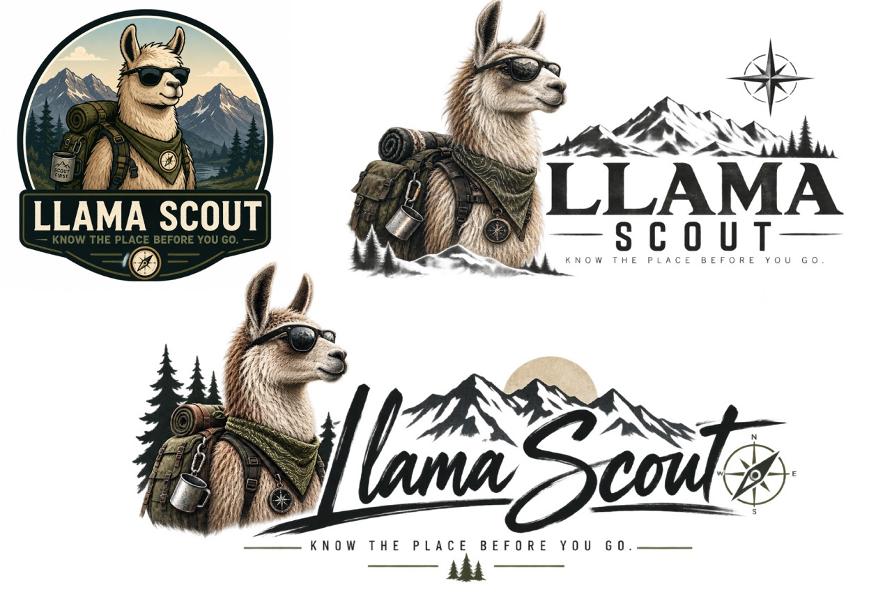
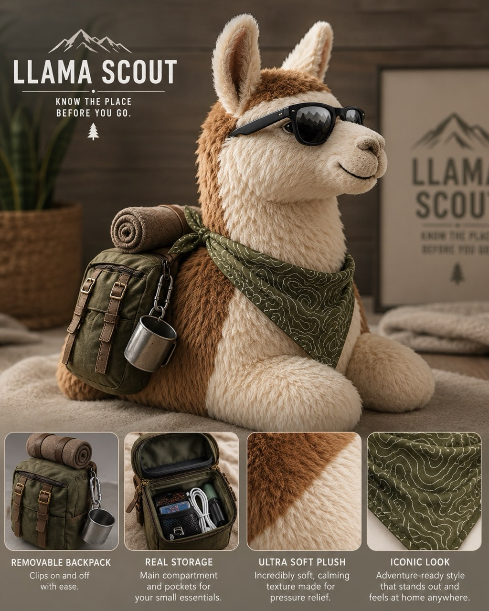
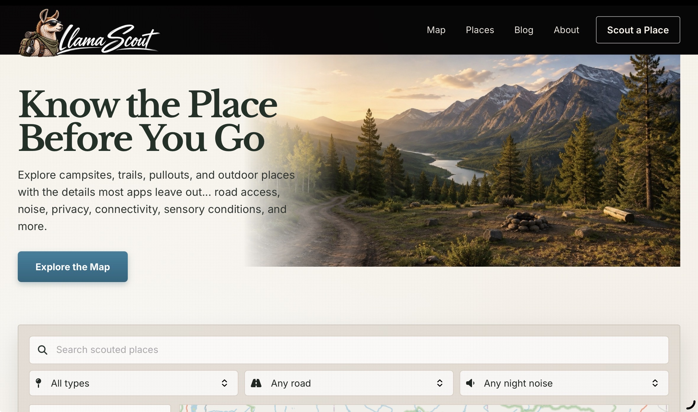

A week ago I was redesigning a website. Now I'm apparently pricing memberships, thinking about weighted stuffed llamas, planning a storefront, designing advertisements, driving DoorDash, neglecting Fox & Timber's social media, and wondering where my executive functioning went.
So... fairly normal week.
AutismOverland has been sitting in my collection of projects for a long time. I liked the idea behind it. I liked what I wanted it to become. But something about the identity never completely clicked.
It described the subject.
It didn't really feel like a personality.
Then a llama showed up
Somewhere in the process of reconsidering AutismOverland, the idea for Llama Scout started taking shape.
Suddenly the project had a character.
It had a voice. It had an identity that could be playful without making the information itself less useful. It felt like something that could eventually become bigger than a website without losing the reason I wanted to build it in the first place.
AutismOverland explained what the project was about. Llama Scout started to feel like someone you could actually explore it with.

Once that clicked, everything moved quickly.
I created the logo, worked out the basic visual identity, started building the frontend, and within a couple of days I had something functioning well enough that I could begin looking past the design and toward what the project actually needs to do.
That is the dangerous part.
Because finishing one thing never seems to remove an item from my brain.
It creates six more.
A frontend is apparently just the beginning
The public-facing side is coming together first because that is the part I can see.
Layout. Typography. Information architecture. Navigation. Images. Branding. The pieces that make something feel real before anyone has even logged into it.
The backend is next.
I want Llama Scout to have a free layer that remains useful, but I also want to build additional information and features behind a membership.
That means a paywall.
Which means accounts.
Which means authentication, payments, permissions, membership management, and all of the boring little details that magically appear after someone says, “What if people could subscribe?”
I haven't settled on pricing yet.
I want it inexpensive enough that the people who could actually benefit from the information can access it, while still giving the project enough income to pay for itself and eventually support more development.
Then I started thinking about coupon codes.
Because apparently the membership system wasn't enough.
And then there was merch

Once you create a mascot, merchandise is apparently unavoidable.
The obvious idea is a stuffed Llama Scout.
But because I am incapable of leaving a simple idea alone, I immediately started wondering whether it could also be weighted.
Something soft and useful. Something that could actually provide pressure and comfort instead of existing solely because it has a logo on it.
Then came the bandanna.
If Llama Scout wears one, why shouldn't people be able to get the same one?
Then shirts.
Hats.
Maybe some kind of genuinely useful branded outdoor item instead of filling a store with things whose only purpose is advertising the brand.
And just like that, I apparently need a storefront too.
This is how my projects work. I don't really finish ideas. They reproduce.
Then I started advertising a product that isn't finished
Naturally, while I'm still figuring out what Llama Scout actually offers, I've also started thinking about how to advertise it.
What would an ad look like?
What would it sound like?
Is Llama Scout funny?
Helpful?
Slightly sarcastic?
Does an advertisement explain the project directly, or does Scout show up and somehow make the point himself?
That's the part of branding I love.
By the time I start thinking about advertising, the thing isn't only a website anymore. It has a personality. I can start imagining how it talks, what it would say, and what somebody should feel after seeing it for the first time.

Meanwhile, Fox & Timber is staring at me
There is one slight problem with allowing myself to become completely obsessed with Llama Scout.
I already have another business.
Fox & Timber needs social media accounts that actually look alive.
I need to start posting work, talking about what the studio does, showing projects, and generally doing all the things that allow a business to exist somewhere other than inside my own browser tabs.
I know that.
My brain also knows that Llama Scout has a bandanna that could potentially become merchandise.
Guess which thought is more interesting.
Somewhere in there I still need to make money
All of this is happening in my spare time.
Which sounds funny because my spare time and work time currently happen in exactly the same place.
Horizon is the office.
Horizon is also home.
And when the money gets low enough, Horizon becomes the vehicle I use to drive DoorDash.
So one hour I might be working through a membership model for Llama Scout, the next I'm picking up someone's dinner, and afterward I'm back in a parking lot thinking about whether a weighted llama needs removable filling so it can be washed.
The projects might be future income. DoorDash is “I need money today” income.
Those are two very different kinds of work, and right now I need both.
My brain has been feeling all of it
This has also been happening while adjusting to a new medication.
The side effects have been at least moderate, which means the amount of energy and attention available to do all of this has not exactly been predictable.
Some moments I can build for hours.
Other moments, deciding which of twelve important things should happen next becomes the entire task.
That's probably the biggest difference between how the last week looks from the outside and how it has felt from inside my head.
From the outside, I created a new brand and built a website in a couple of days.
From inside, I have been bouncing between ideas so quickly that sometimes I lose track of which project I opened the laptop to work on.
Making things quickly isn't really the hard part anymore
This might be the thing I'm beginning to understand about myself.
I can build things quickly when an idea clicks.
The logo isn't necessarily the hard part.
The frontend isn't necessarily the hard part.
Sometimes even figuring out the business model isn't the hardest part.
The hard part is everything the finished thing creates.
Maintenance.
Marketing.
Accounts.
Social media.
Customer support.
New features.
Merch.
Content.
And the constant temptation to start building the next interesting thing before any of those things have caught up.
Creating the project gives me momentum. Managing everything the project creates requires executive functioning. Unfortunately, those are not the same resource.
So that's the week
AutismOverland became Llama Scout.
Llama Scout got a logo.
Then a frontend.
Then plans for a backend.
Then memberships.
Then coupons.
Then merchandise.
Then a store.
Then advertising.
Meanwhile Fox & Timber is waiting for social media, DoorDash is waiting whenever I need actual money, my medication is introducing its own complications, and somewhere inside all of that I remembered that Sunday means I wanted another Notebook entry.
So here it is.
Honestly, I'm curious to see what this paragraph looks like a week from now.